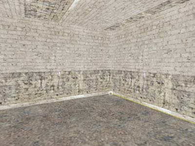
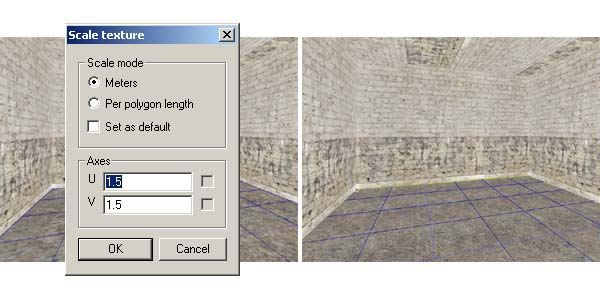
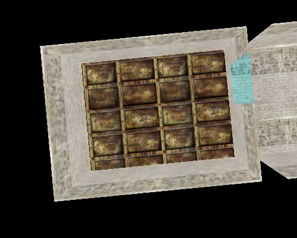
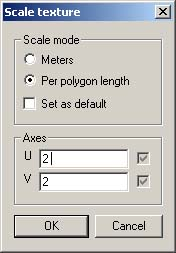
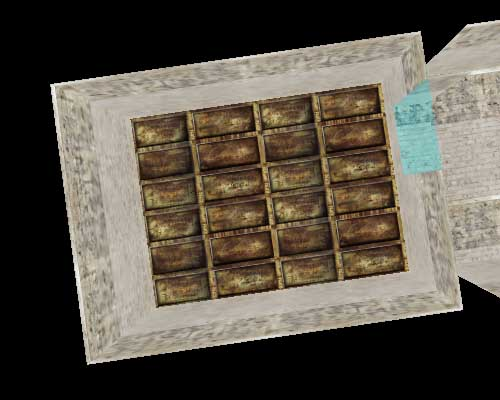

|
Basic Texturing
With this tutorial you are going to learn to texture your objects properly. Let's continue working with the
level you made in the "Creating your first level" -tutorial.
When you created your first room, it was textured with the material you had selected when you made the mesh (the brick wall). Now we want to change the floor and roof material into something more appropriate.
First move inside the room. Switch to texture mode (press F6) to do some texture editing. Now, as you move your mouse, you will see a
white/yellow outline indicating the active polygon (and the active edge) and
a white tick indicating the nearest vertex.
Click LMB on the concrete texture from the material window to select it, and then click on the floor polygon with
LMB.

Notice that these textures are carefully made to appear seamless, but even in here, if you look carefully, you can see the textures repeat over and over. In MaxED, all textures always loop both horizontally and vertically.
The walls seem fine, but the concrete floor seems to be a bit too blurry so we should make the texture more dense. Let's use
MaxED's handy numerical input. While mouse is over the floor, press
U or V to adjust the UV coordinates of the floor numerically.
A dialog appears -- make sure that the Meters radio button is pressed. Below, the figures indicate that floor texture is 4 by 4 meters in size. Let's type a smaller figure in both dialogs, 1.5 is good. And now, when you press OK, you see the texture turn more dense.
TIP: Actually, it is enough that you type 1.5 on the other and leave the
other dimension untouched. As you see, there is a tick after both dimensions and once you change a number it gets checked. This indicates that this number is explicitly defined and the other value (w/o the tick) will scale proportionally once you press OK. If you want the other value stay what it is, a good way to 'touch' it is to write a space after the figure.

Next, we texture the roof. Change material category to
"metal" and select the rusty plate covered texture (the only one). Click LMB on the ceiling in F6 mode to change the texture. It does not seem to match the walls of the room very realistically, so lets adjust it a little. Move downwards and look up to get the
whole ceiling. You can press numpad * to get rid of the grid for a moment.

Press RMB while on top of the polygon and drag. You can freely move the texture around. Lets try out
some other texturing commands too:
-
Press arrow keys to move the texture in steps
of the current grid size
-
Press PageUp/PageDown to rotate texture 90 degrees around the active vertex (with the tick).
-
Press X/Y to flip texture around the active edge (the yellow one).
-
Take the mouse close to the top left corner as seen above, press
TAB key, keep it pressed and move the cursor near the opposite bottom-right corner (notice that the tick does not jump
anymore). Now keep RMB pressed and move the mouse gently around. The corner with tick
mark sticks in its original coordinates and the UV dimensions of the texture are scaled. With a
little practice and by combining this functionality with the RMB w/o the TAB (free move) you can
visually handle texture placement and scaling very easily.
-
While doing the free texture scale (with
TAB and RMB) press also Alt (TAB-Alt-RMB). This makes the texture keep its proportions.
-
You can also lock the axis: Move the texture a bit to the direction you want and press
Ctrl while still keeping the RMB pressed. This will lock the movement to the axis that was your major
direction
-
Keeping Z pressed while RMB and moving
the mouse will rotate the texture around the active vertex
-
Pressing F will return the texture to its original default size and set the U dimension of the
texture parallel to the active edge
Numerical input is also very obvious choice with the roof, as the texture has clear structure and it would be natural to make the plating to loop N times as in real building

Let's press U and this time use the relative input. By pressing Per polygon length radio button you can
assign the looping time in relation to the polygon dimensions. Now we want the
texture to loop 2 times in both dimensions (as the room is 8x6 meters, this will make the texture 4x3 meters in size).
Move the texture around with RMB, if necessary.

Now
you can texture the other room as well and play around with the
texturing commands.
You
can easily copy the texture mapping coordinates (textures position,
proportions and size) between two polygons that share an edge. To try
this, move into one of the rooms, go into F6-mode and play with the
coordinates of one of the wall textures (for example, make the texture
very large). Now, while still in F6-mode, make sure that the wall you just
modified is active (the polygon edges are highlighted), press C, and
click on one of the adjacent walls. The texture coordinates are copied
to that wall. You have to repeat selecting the source polygon, pressing
C and clicking the target polygon to repeat this. I.e. you cannot just
press C once, and then click on all the polygons that you wish to have
those coordinates.
To
quickly either check what category a specific texture is in and with
what name, or to just activate that texture, point a polygon with that
texture in F6-mode, and press G (grab).
|